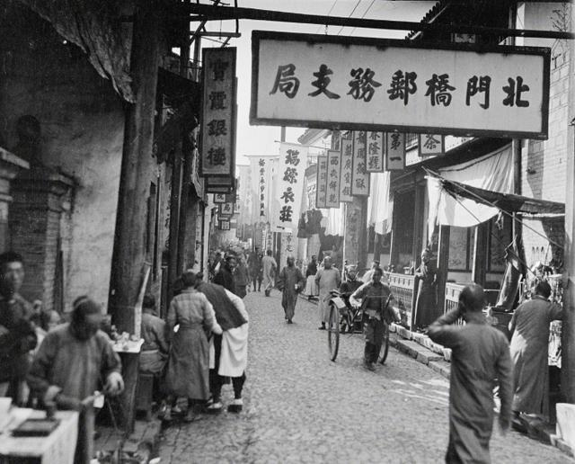
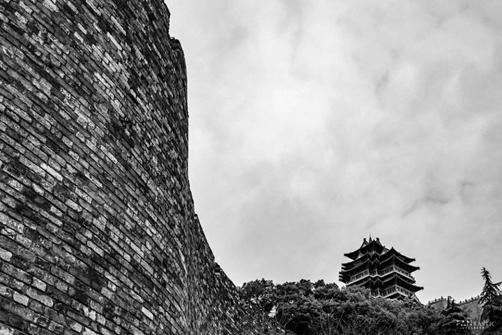
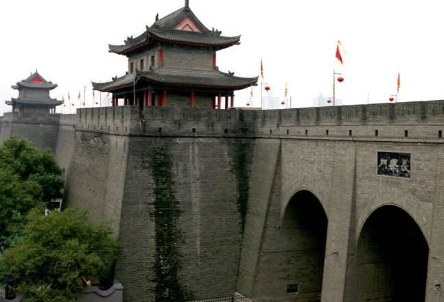
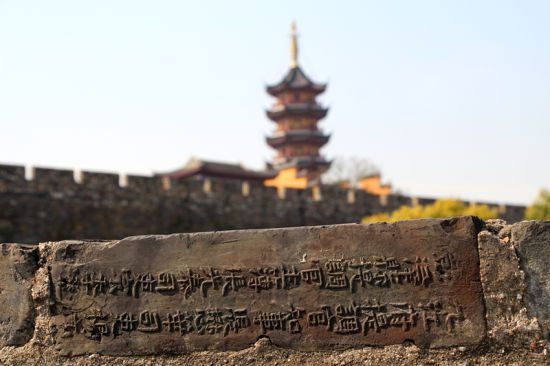

Early history and foundation
Man
lived more than 500 thousand years ago.
Zun, a kind of wine vessel, was found to exist in Beiyinyangying culture of Nanjing in about 5000 years
ago.
In 473 bc, the State of Yue conquered Wu and constructed the fort of Yuecheng (越城) on the outskirts of
the present-day Zhonghua Gate.
In 333 bc, after eliminating the State of Yue, the State of Chu built Jinling Yi (金陵邑) in the western
part of present-day Nanjing.
It was renamed Moling (秣陵) during the reign of the First Emperor of Qin.
Since then, the city experienced destruction and renewal many times.
Nanjing was later the capital city of Danyang Prefecture, and had been the capital city of Yangzhou for
about 400 years from late Han to early Tang.
Capital of the Six Dynasties

Nanjing first became a state capital in ad 229, when the state of Eastern Wu founded by Sun Quan during
the Three Kingdoms period relocated its capital to Jianye (建業),
the city extended on the basis of Jinling Yi in ad 211.This marked the first time a Chinese dynastic
capital moved to southern China.
During the period of North–South division, Nanjing remained the capital of the Southern dynasties for
more than two and a half centuries.
During this time, Nanjing was the international hub of East Asia.
Six Dynasties is a collective term for six Chinese dynasties mentioned above which all maintained
national capitals at Jiankang.
The six dynasties were: Eastern Wu (222–280), Eastern Jin dynasty (317–420) and four southern dynasties
(420-589).
Southern capital of Ming and Qing dynasty

The first emperor of the Ming dynasty, Zhu Yuanzhang (the Hongwu Emperor),
who overthrew the Yuan dynasty, renamed the city Yingtian (應天), rebuilt it, and made it the dynastic
capital in 1368.
It is believed that Nanjing was the largest city in the world from 1358 to 1425 with a population of
487,000 in 1400.
Zheng He governed the city with three eunuchs for internal matters and two military noblemen for
external matters,
awaiting the Hongxi Emperor's return along with the military establishment from the north.
As the center of the empire, early-Ming Nanjing had worldwide connections.
Over two centuries after the removal of the capital to Beijing, Nanjing was destined to become the
capital of a Ming emperor one more time.
Under the Qing dynasty (1644–1911), the Nanjing area was known as Jiangning and served as the seat of
government for the Viceroy of Liangjiang.
It was the site of a Qing army garrison.
Both the Qing viceroy and the Taiping king resided in buildings that would later be known as the
Presidential Palace.
Chinese Civil War and People's Republic

On 21 April 1949, Communist forces crossed the Yangtze River.
On April 23, the Communist People's Liberation Army (PLA) captured Nanjing.
By late 1949, the PLA was pursuing remnants of KMT forces southwards in southern China,
and only Tibet and Hainan Island were left. After the establishment of the People's Republic of China in
October 1949,
Nanjing was initially a province-level municipality, but it was soon merged into Jiangsu province and
again became the
provincial capital by replacing Zhenjiang which was transferred in 1928,
and retains that status to this day.